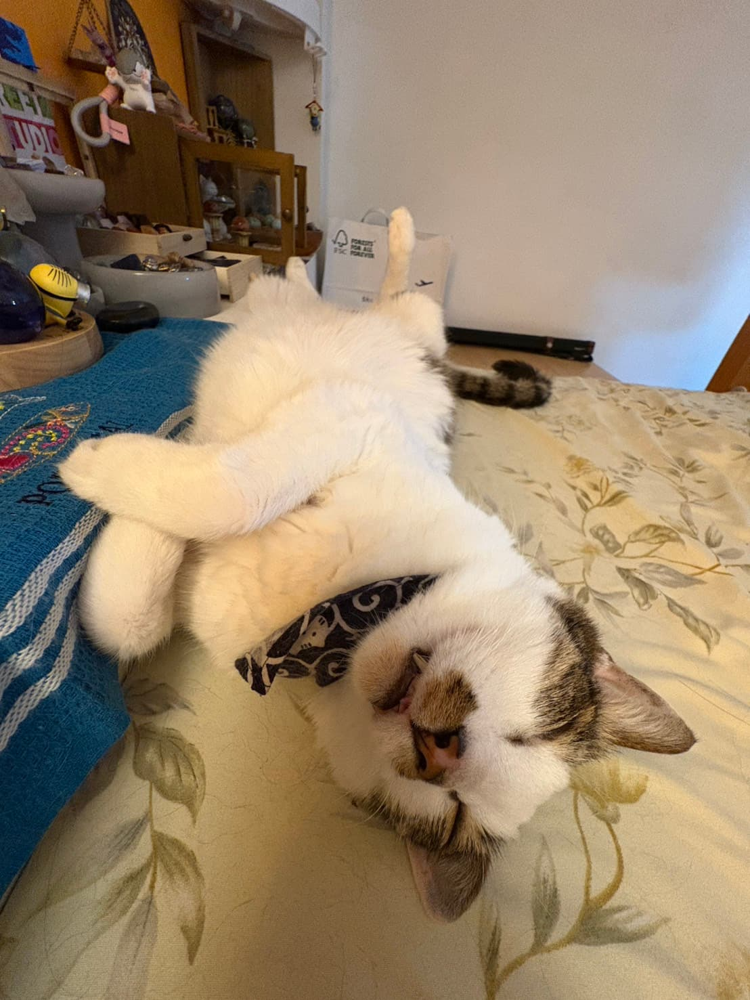
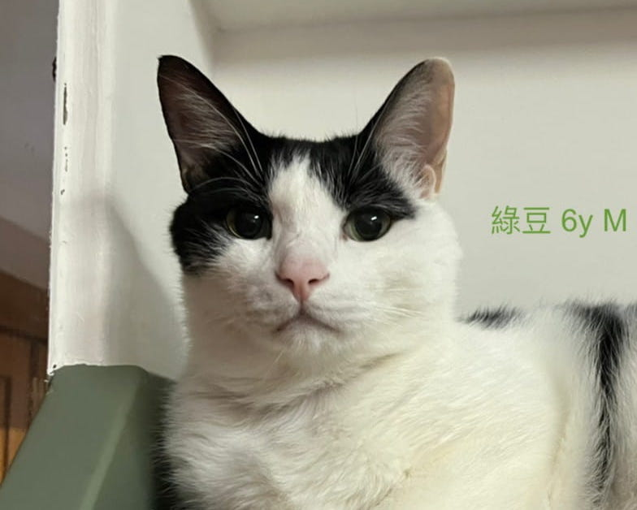
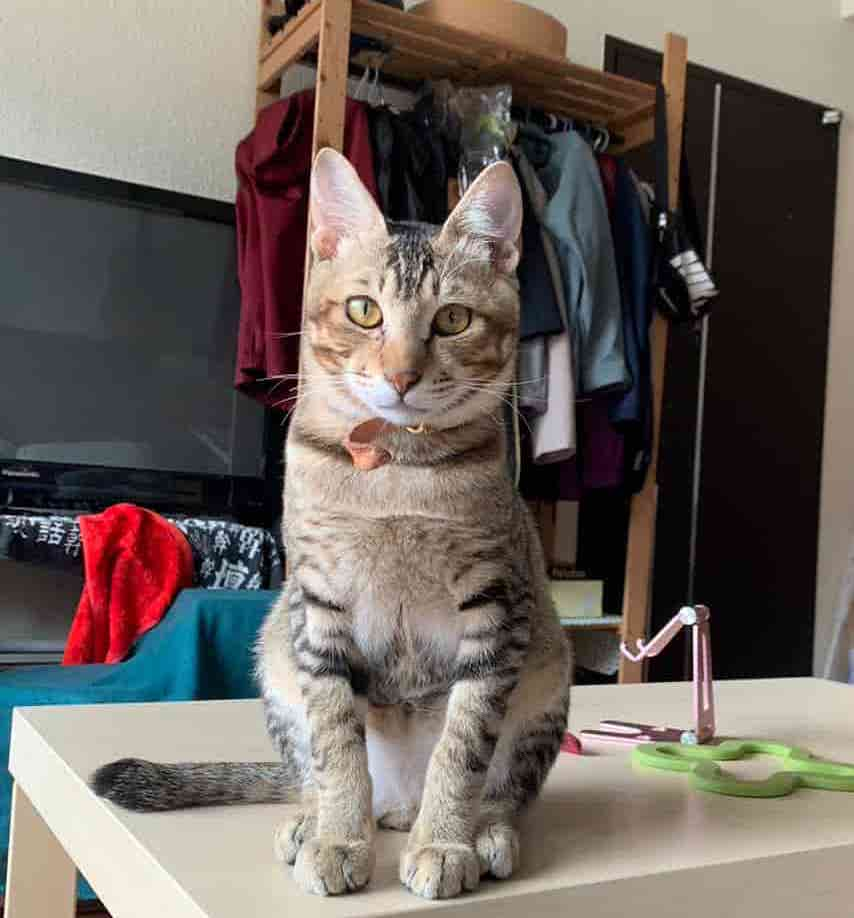

附錄 · 換你來寫信
毛孩客訴信箱
網站上其他地方，都是動物在說話。這裡反過來——換照護人來告狀。那些牠吃飽就翻臉、討摸摸又嫌棄、明明很愛你卻死不承認的日常瞬間，歡迎寫成一封輕鬆的「客訴信」，貼張照片，讓大家笑一笑，也讓彼此知道：原來大家的毛孩都一樣不講理。

申訴人：鼻鼻的媽媽
案由：牠在吃東西之前，眼睛都會睜得很大很可愛，乖乖坐好，還會主動把手放上來，超級聽話。可是一吃完，立刻翻臉走人，伸手要牠握手，牠就用一種鄙視的眼神看著我，好像我們根本不熟。

申訴人：綠豆的媽媽
案由：牠很愛捉弄家裡其他貓，玩到對方受不了就跑來跟我告狀，我念牠幾句，牠立刻回嘴：「打是情、罵是愛啊，這句話還不是你自己常說的。」把我的台詞原封不動地還給我，我完全說不出話。

申訴人：墨子的家人
案由：家裡貓不少，開銷跟整理都不輕鬆，問牠會不會不好意思佔位置，牠一臉淡定地說：「我知道，一個家要養那麼多隻貓咪並不容易，我很樂意貢獻我的愛。」講得好像牠在做善事、我在感謝牠收留一樣。

申訴人：小波的把拔
案由：牠每天早上固定時間準時巡邏，看到把拔還在睡，就用一種「你怎麼還沒起床」的眼神看著他，然後說：「太陽出來了，把拔要起床了啊，他已經睡了這麼久！」牠才7個月大，作息比我們全家都健康，還敢嫌我們懶。

申訴人：饅頭的家人
案由：牠對地板溫度異常挑剔，天氣熱要找冰的地磚踩，天氣冷要找曬過太陽的地方站，家裡地板被牠踩出一條固定巡邏路線。問牠為什麼這麼講究，牠說：「我喜歡踩起來有不同溫度的地方，很熱的時候踩冰冰的，很冷的時候踩熱熱的。」講得好像自己是溫控工程師。

申訴人：露露的媽媽
案由：不管問牠什麼——搬家會不會緊張、新朋友喜不喜歡、家裡最近是不是有點吵——牠永遠只有一個答案：「我沒有覺得怎樣，但可以睡就好。」問了半天等於沒問，牠13歲的淡定完全把我的焦慮襯托得很可笑。
也許是你家的狗、你家的貓，或是你家的兔子——歡迎把牠的「罪狀」寫成一封信，寄給我們。
越荒謬越好，越日常越好——這裡不評分，只想聽你說。
輪到你告狀了
寫下牠的「罪狀」，附一張照片。通過的話，會被登上這個信箱，跟大家一起笑一笑。
我要提交客訴＊ 這裡分享的都是輕鬆好笑的小事，如果內容涉及動物真正受傷或需要協助的情況，建議直接申請一次正式的動物溝通個案。
「我沒有不聽話，我只是吃飽了。」
— 幾乎所有被告的共同答辯